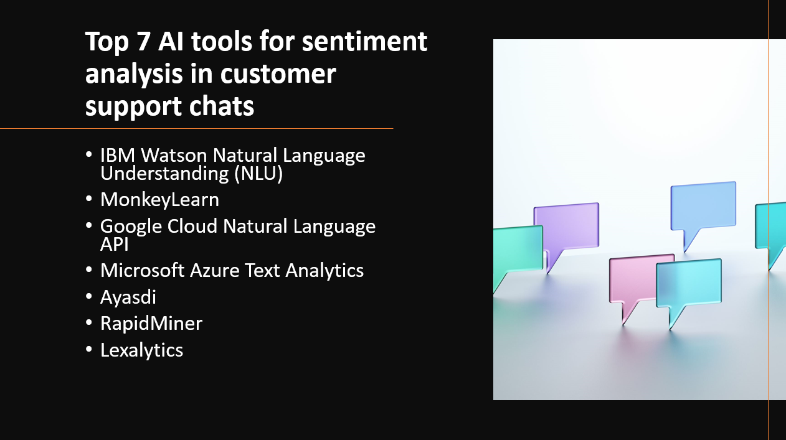

Introduction
Sentiment analysis in customer support chats is crucial for businesses to understand customer feedback and emotions. Leveraging artificial intelligence (AI) tools, organizations can efficiently analyze chat interactions and derive valuable insights to improve customer experiences. In this blog post, we will explore the top seven AI tools for sentiment analysis in customer support chats, empowering businesses to enhance their support services and build stronger customer relationships.
- AI tools provide immediate sentiment analysis during customer support chats.
- Sentiment analysis helps support agents respond empathetically and improve customer satisfaction.
- AI detects negative sentiments early, enabling timely resolutions and issue prevention.
- Sentiment analysis provides insights into customer feedback trends for process improvement.
- AI tools handle large volumes of support chats efficiently.
Here's our Top 7 AI tools for sentiment analysis in customer support chats:
1: IBM Watson Natural Language Understanding (NLU)
Overview and Importance
IBM Watson Natural Language Understanding (NLU) is a powerful AI tool designed for sentiment analysis in customer support chats. It leverages advanced natural language processing (NLP) and machine learning techniques to analyze text data from customer interactions, providing valuable insights into customer sentiments, emotions, and satisfaction levels. IBM Watson NLU is extensively used by businesses to enhance customer support services, improve customer experiences, and make data-driven decisions to boost overall customer satisfaction.
Learn more about NLU
Key Features and Capabilities
Sentiment Analysis
- IBM Watson NLU can accurately determine the sentiment of customer support chat messages, distinguishing between positive, negative, and neutral sentiments.
Emotion Analysis
- The tool can also identify emotions expressed in the text, such as joy, anger, sadness, and more, enabling businesses to understand customers' emotional responses.
Entity Recognition
- IBM Watson NLU can recognize entities such as products, locations, organizations, etc., mentioned in customer chats, aiding in better understanding customer needs and preferences.
2: MonkeyLearn
Overview and Importance
MonkeyLearn is a powerful AI tool that plays a crucial role in sentiment analysis for customer support chats. It employs advanced natural language processing (NLP) algorithms and machine learning models to analyze text data from customer interactions in real-time. MonkeyLearn helps businesses gain valuable insights into customer sentiments, feedback, and emotions, enabling them to respond promptly and effectively to customer queries, issues, and concerns.
Learn more about MonkeyLearn
Key Features and Capabilities
Sentiment Analysis
- MonkeyLearn can accurately classify customer support chat messages into positive, negative, or neutral sentiments, providing an overall sentiment score for each interaction.
Customization
- The tool allows businesses to create custom sentiment analysis models tailored to their specific industry and domain, enhancing the accuracy and relevance of sentiment classification.
Real-time Monitoring
- MonkeyLearn enables real-time sentiment analysis, empowering customer support teams to proactively address issues and gauge customer satisfaction levels during live chat interactions.
3: Google Cloud Natural Language API
Overview and Importance
The Google Cloud Natural Language API is a leading AI tool for sentiment analysis in customer support chats. It leverages Google's powerful natural language processing capabilities to analyze and understand text data from customer interactions. The API allows businesses to gain valuable insights into customer sentiments, emotions, and intentions, enabling them to provide more personalized and effective customer support.
Learn more about Google Cloud Natural Language API
Key Features and Capabilities
Sentiment Analysis
- The API can accurately determine the sentiment of customer support chat messages, providing a sentiment score that indicates whether the sentiment is positive, negative, or neutral.
Entity Recognition
- It can identify and extract entities such as product names, locations, and people from the chat messages, facilitating better understanding of customer needs and preferences.
Intent Analysis
- The API can analyze the intent behind customer queries and requests, helping support teams address customer concerns more efficiently and effectively.
4: Microsoft Azure Text Analytics
Overview and Importance
Microsoft Azure Text Analytics is a prominent AI tool for sentiment analysis in customer support chats. Leveraging advanced natural language processing (NLP) techniques, this tool allows businesses to gain valuable insights from customer interactions. It aids in understanding customer sentiments, opinions, and emotions, empowering support teams to deliver more personalized and empathetic responses, thereby enhancing overall customer satisfaction.
Learn more about Azure Text Analytics
Key Features and Capabilities
Sentiment Analysis
- The tool can determine the sentiment expressed in customer chat messages, classifying them as positive, negative, or neutral.
Language Detection
- It can automatically identify the language used in customer interactions, enabling multilingual support for analyzing sentiments across various languages.
Entity Recognition
- The tool can extract and recognize entities like product names, locations, and organization names from the text, facilitating more targeted and relevant responses from support teams.
5: Ayasdi
Overview and Importance
Ayasdi is an AI tool that offers advanced capabilities for sentiment analysis in customer support chats. It utilizes machine learning and natural language processing (NLP) algorithms to analyze customer interactions and identify sentiment patterns. This tool plays a crucial role in enhancing customer experience and optimizing support processes, as businesses can gain insights into customer sentiment and feedback, leading to more effective and personalized responses.
Learn more about Ayasdi
Key Features and Capabilities
Sentiment Analysis
- Ayasdi can accurately analyze the sentiment expressed in customer support chats, enabling businesses to gauge customer satisfaction and identify areas for improvement.
Topic Modeling
- The tool can perform topic modeling on chat conversations, categorizing them into different topics or themes, which helps support teams to address issues more efficiently.
Anomaly Detection
- Ayasdi can detect unusual patterns or outliers in customer interactions, alerting support teams to potential issues that may require immediate attention.
6: RapidMiner
Overview and Importance
RapidMiner is an AI tool with significant importance in sentiment analysis for customer support chats. It employs advanced machine learning techniques to extract valuable insights from chat interactions, helping businesses understand customer sentiment, identify trends, and improve their support processes. RapidMiner's user-friendly interface and automation capabilities make it accessible to users with varying levels of expertise, making it an ideal choice for customer-centric organizations.
Learn more about RapidMiner
Key Features and Capabilities
Text Processing
- RapidMiner provides robust text processing capabilities to preprocess and analyze chat data for sentiment analysis, including text cleaning, tokenization, and feature extraction.
Sentiment Analysis Models
- The platform offers pre-built sentiment analysis models that can be easily customized and integrated into customer support workflows, enabling real-time sentiment monitoring.
Visualization and Reporting
- RapidMiner allows users to visualize sentiment analysis results through interactive dashboards and generate insightful reports, aiding in decision-making and performance evaluation.
7: Lexalytics
Overview and Importance
Lexalytics is a prominent AI tool in sentiment analysis for customer support chats. With its advanced natural language processing (NLP) capabilities, Lexalytics can accurately analyze and categorize customer feedback, allowing businesses to gauge customer sentiment and address concerns effectively. Its application in customer support enables organizations to enhance customer satisfaction, improve service quality, and make data-driven decisions.
Learn more about Lexalytics
Key Features and Capabilities
Sentiment Analysis
- Lexalytics offers powerful sentiment analysis features, allowing businesses to automatically detect positive, negative, and neutral sentiments in customer support chat conversations.
Entity Recognition
- The tool can identify entities, such as product names or brand mentions, enabling businesses to pinpoint key areas of customer feedback.
Intent Analysis
- Lexalytics' intent analysis capabilities help extract the main purpose or goal of customer interactions, aiding in understanding customer needs and preferences.
Conclusion
AI tools are significant for sentiment analysis in customer support chats, providing valuable insights. The top seven tools are IBM Watson NLU, MonkeyLearn, Google Cloud Natural Language API, Microsoft Azure Text Analytics, Ayasdi, RapidMiner, and Lexalytics. They offer accurate sentiment analysis and entity recognition capabilities. Sentiment analysis enhances customer experiences and improves support services by understanding customer emotions and enabling proactive responses. Businesses should integrate these AI tools into their customer support systems to gain valuable insights and deliver personalized and proactive customer experiences.